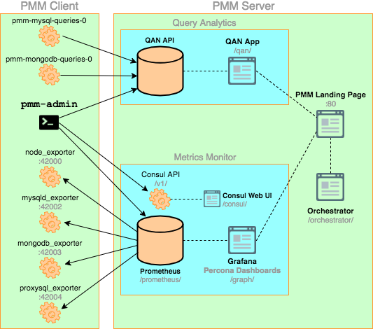

Overview of Percona Monitoring and Management Architecture
The PMM platform is based on a client-server model that enables scalability. It includes the following modules:
-
PMM Client installed on every database host that you want to monitor. It collects server metrics, general system metrics, and Query Analytics data for a complete performance overview.
-
PMM Server is the central part of PMM that aggregates collected data and presents it in the form of tables, dashboards, and graphs in a web interface.
The modules are packaged for easy installation and usage. It is assumed that the user should not need to understand what are the exact tools that make up each module and how they interact. However, if you want to leverage the full potential of PMM, the internal structure is important.
PMM is a collection of tools designed to seamlessly work together. Some are developed by Percona and some are third-party open-source tools.
Note
The overall client-server model is not likely to change, but the set of tools that make up each component may evolve with the product.
The following diagram illustrates how PMM is currently structured:

PMM Client
Each PMM Client collects various data about general system and database performance, and sends this data to the corresponding PMM Server.
The PMM Client package consist of the following:
-
pmm-admin is a command-line tool for managing PMM Client, for example, adding and removing database instances that you want to monitor. For more information, see Managing PMM Client.
-
pmm-mysql-queries-0is a service that manages the QAN agent as it collects query performance data from MySQL and sends it to the QAN API on PMM Server. -
pmm-mongodb-queries-0is a service that manages the QAN agent as it collects query performance data from MongoDB and sends it to QAN API on PMM Server. -
node_exporter is a Prometheus exporter that collects general system metrics.
-
mysqld_exporter is a Prometheus exporter that collects MySQL server metrics.
-
mongodb_exporter is a Prometheus exporter that collects MongoDB server metrics.
-
proxysql_exporter is a Prometheus exporter that collects ProxySQL performance metrics.
See also
- How to install PMM Client
- Installing Clients
- How to pass exporter specific options when adding a monitoring service
- Passing options to the exporter
- List of available exporter options
- Exporters Overview
PMM Server
PMM Server runs on the machine that will be your central monitoring host. It is distributed as an appliance via the following:
- Docker image that you can use to run a container
- OVA that you can run in VirtualBox or another hypervisor
- AMI that you can run via Amazon Web Services
For more information, see Installing PMM Server.
PMM Server includes the following tools:
-
Query Analytics enables you to analyze MySQL query performance over periods of time. In addition to the client-side QAN agent, it includes the following:
- QAN API is the backend for storing and accessing query data collected by the QAN agent running on a PMM Client.
- QAN Web App is a web application for visualizing collected Query Analytics data.
-
Metrics Monitor provides a historical view of metrics that are critical to a MySQL or MongoDB server instance. It includes the following:
-
Prometheus is a third-party time-series database that connects to exporters running on a PMM Client and aggregates metrics collected by the exporters. For more information, see Prometheus Docs.
-
Consul provides an API that a PMM Client can use to remotely list, add, and remove hosts for Prometheus. It also stores monitoring metadata. For more information, see Consul Docs.
Warning
Although the Consul web UI is accessible, do not make any changes to the configuration.
-
-
Grafana is a third-party dashboard and graph builder for visualizing data aggregated by Prometheus in an intuitive web interface. For more information, see Grafana Docs.
- Percona Dashboards is a set of dashboards for Grafana developed by Percona.
-
-
Orchestrator is a MySQL replication topology management and visualization tool. For more information, see: Orchestrator Manual.
All tools can be accessed from the PMM Server web interface (landing page). For more information, see Tools of PMM.
Orchestrator
Orchestrator is a MySQL replication topology management and visualization tool. If it is enabled, you can access it using the /orchestrator URL after PMM Server address. Alternatively, you can click the MySQL Replication Topology Manager button on the PMM Server landing page.
To use it, create a MySQL user for Orchestrator on all managed instances:
GRANT SUPER, PROCESS, REPLICATION SLAVE, RELOAD ON *.*
TO 'orc_client_user'@'%'
IDENTIFIED BY 'orc_client_password’;
Note
The credentials in the previous example are default. If you use a different user name or password, you have to pass them when running PMM Server using the ORCHESTRATOR_PASSWORD and ORCHESTRATOR_USER options.
$ docker run ... -e ORCHESTRATOR_ENABLED=true ORCHESTRATOR_USER=name -e ORCHESTRATOR_PASSWORD=pass ... percona/ pmm-server:1
Then you can use the Discover page in the Orchestrator web interface to add the instances to the topology.
Note
Orchestrator is not enabled by default starting with PMM 1.3.0
Orchestrator was included into PMM for experimental purposes. It is a standalone tool, not integrated with PMM other than that you can access it from the landing page.
In version 1.3.0 and later, Orchestrator is not enabled by default. To enable it, see Additional options in the Running PMM Server via Docker section.